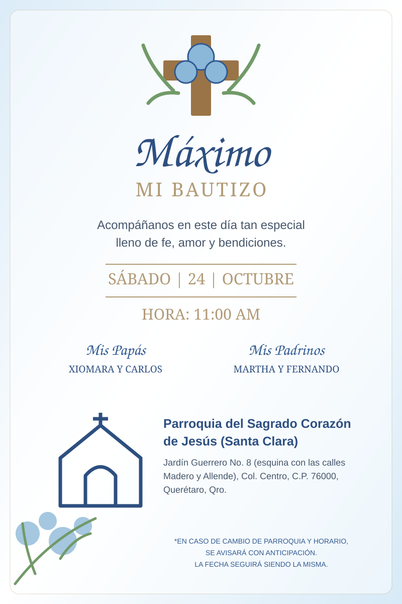

Acompáñanos a celebrar este momento tan especial en la vida de Máximo y comparte con nosotros el inicio de esta nueva etapa llena de bendiciones.
(Santa Clara)
Jardín Guerrero No. 8, esquina con las calles Madero y Allende, Col. Centro, C.P. 76000, Querétaro, Qro.
Después de acompañar a Máximo en este día tan especial, queremos continuar la celebración contigo.
Después de la ceremonia, te esperamos para festejar juntos el cumpleaños de Máximo.